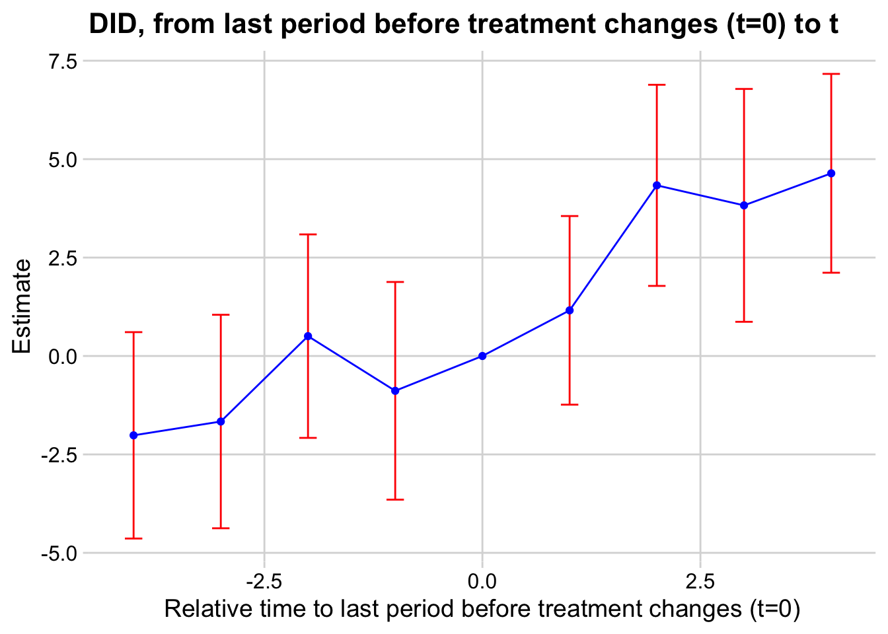

# Packages Needed:
library(DIDmultiplegtDYN)DIDmultiple Estimator
De Chaisemartin and d’Hautlfoeuille (2024)
The DIDmultiple estimator developed by de Chaisemartin and d’Hautlfoeuille (2020) is designed for staggered designs and classical designs. Its main selling point is its flexibility - it can deal with multiple treatment levels, including continuous treatment variables. Before starting, we generally want to omit NA’s from our data:
df <- na.omit(df)
# if your df is large, subset for only the var you will use, then na.omitThe estimator focuses on switchers - these are individuals that experience a change in treatment status during the study period. For each switcher, control groups are identified as units with the same initial treatment status, that did not change their treatment at the time the switcher did.
Because it focuses on switchers, the estimator is able to adapt to continuous treatments. This is particularly useful for many questions in economics/political science that are not just yes/no treatments, but that have levels to them.
model <- did_multiplegt_dyn(
df = df, # your data
outcome = "outcome", # outcome var
group = "unit", # UNIT variable (not cohort)
time = "time", # time period var
treatment = "treat", # treatment var
effects = 4, # number of post-treat dynamic effects
placebo = 4, # number of pre-treat effects
graph_off = FALSE, # if you don't want graph, put TRUE
continuous = NULL # put 1 if it is continuous, can delete arg if not
)
We can also view the overall ATT and summary below (the ATT is given in the estimate of the section that says “Average cumulative effect per treatment unit”):
summary(model)#>
#> ----------------------------------------------------------------------
#> Estimation of treatment effects: Event-study effects
#> ----------------------------------------------------------------------
#> Estimate SE LB CI UB CI N Switchers
#> Effect_1 1.15913 1.22235 -1.23663 3.55490 108 55
#> Effect_2 4.33475 1.30335 1.78023 6.88927 108 55
#> Effect_3 3.82572 1.50893 0.86827 6.78317 108 55
#> Effect_4 4.64014 1.28845 2.11483 7.16545 108 55
#>
#> Test of joint nullity of the effects : p-value = 0.0009
#> ----------------------------------------------------------------------
#> Average cumulative (total) effect per treatment unit
#> ----------------------------------------------------------------------
#> Estimate SE LB CI UB CI N Switchers
#> 3.48994 1.03907 1.45341 5.52647 432 220
#> Average number of time periods over which a treatment effect is accumulated: 2.5000
#>
#> ----------------------------------------------------------------------
#> Testing the parallel trends and no anticipation assumptions
#> ----------------------------------------------------------------------
#> Estimate SE LB CI UB CI N Switchers
#> Placebo_1 -0.88462 1.41062 -3.64939 1.88015 108 55
#> Placebo_2 0.50413 1.31849 -2.08007 3.08832 108 55
#> Placebo_3 -1.66447 1.38341 -4.37592 1.04697 108 55
#> Placebo_4 -2.01542 1.33739 -4.63666 0.60582 108 55
#>
#> Test of joint nullity of the placebos : p-value = 0.2963
#>
#>
#> The development of this package was funded by the European Union.
#> ERC REALLYCREDIBLE - GA N. 101043899The output also computes a “joint test of nullity” for the placebos. This is basically a test for the parallel trends assumption. If p>0.05 (not significant), then parallel trends is met.